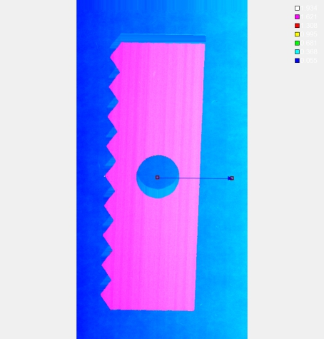
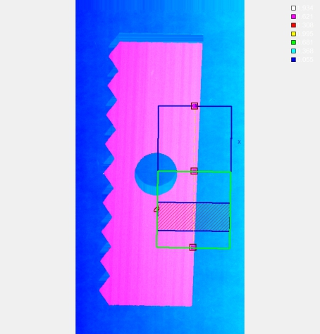

Trong đo lường 3D, công cụ tạo mặt cắt chủ yếu dùng để lấy dữ liệu biên dạng của ảnh dữ liệu độ sâu theo một hướng nào đó trên mặt phẳng XY, nhằm giảm độ khó đo theo hướng đó, nâng cao độ chính xác đo và đáp ứng tiêu chuẩn yêu cầu của ứng dụng.


| Tên tham số | Mô tả tham số |
|---|---|
| Ảnh độ sâu đầu vào | Nhập ảnh độ sâu cần kiểm tra. |
| Biến đổi tuyến tính 2D | Phép biến đổi tịnh tiến, xoay, co giãn của mục tiêu so với mẫu. |
| Tên tham số | Mô tả tham số |
|---|---|
| Chế độ liên tục | Khi chọn “Không”, trích xuất một biên dạng đơn; khi chọn “Có”, trích xuất nhiều biên dạng theo khoảng cách giữa các mặt cắt liền kề. |
| ROI tương tác vector | Có hiệu lực khi chế độ liên tục chọn “Không”. Dùng để chỉ định hướng và kích thước của mặt cắt. |
| Thiết lập thủ công khoảng cách điểm | Có hiệu lực khi chế độ liên tục chọn “Không”. Chọn “Có” để hiển thị tham số khoảng cách điểm, thiết lập khoảng cách điểm tùy chỉnh làm độ phân giải theo hướng X. |
| Khoảng cách điểm | Có hiệu lực khi chế độ liên tục chọn “Không”. Người dùng thiết lập khoảng cách điểm tùy chỉnh làm độ phân giải theo hướng X, phạm vi giá trị [0.0001,1], đơn vị: milimét. |
| Chiều rộng vùng trích xuất biên dạng | Khi trích xuất biên dạng bên trong ROI biên dạng liên tục, vùng này được chia thành N vùng trích xuất biên dạng, mỗi vùng trích xuất dữ liệu biên dạng tạo ra một mặt cắt. Tham số này dùng để thiết lập chiều rộng của vùng trích xuất dữ liệu biên dạng, phạm vi giá trị 1~10000, và (chiều rộng + khoảng cách)>=1, đơn vị: pixel. |
| Khoảng cách vùng trích xuất biên dạng | Khi trích xuất biên dạng bên trong ROI biên dạng liên tục, vùng này được chia thành N vùng trích xuất biên dạng, mỗi vùng trích xuất biên dạng tạo ra một mặt cắt. Tham số này dùng để thiết lập khoảng cách giữa tâm các caliper liền kề, phạm vi giá trị 0~10000, và (chiều rộng + khoảng cách)>=1, đơn vị: pixel. |
| Tạo ngược hướng | Có hiệu lực khi chế độ liên tục chọn “Có”. Hướng thuận là hướng mũi tên nhỏ trong GUI, nếu tham số này là “Có”, thì tạo biên dạng mặt cắt theo hướng ngược lại. |
| Chiều rộng GUI nhất quán | Có hiệu lực khi chế độ liên tục chọn “Có”. Khi chọn “Có”, chiều rộng GUI thay đổi đồng bộ; khi chọn “Không”, từng đoạn GUI có thể thiết lập chiều rộng khác nhau. |
| Tên tham số | Mô tả tham số |
|---|---|
| Dữ liệu biên dạng đầu ra | Xuất dữ liệu lấy mẫu của ảnh độ sâu theo hướng vector, tức dữ liệu biên dạng, bao gồm số điểm biên dạng và số điểm hợp lệ. |
| Mảng biên dạng đầu ra | Có hiệu lực khi chế độ liên tục chọn “Có”. Xuất nhiều dữ liệu biên dạng. Lúc này dữ liệu biên dạng đầu ra và hiển thị ảnh là dữ liệu trung gian của mảng biên dạng. |
| ROI vector | Có hiệu lực khi chế độ liên tục chọn “Không”, về mặt giá trị nhất quán với tham số thuộc tính ROI tương tác vector. |
| Nhóm ROI vector | Có hiệu lực khi chế độ liên tục chọn “Có”, là tập hợp các đoạn caliper trên ROI đường gấp khúc biến thiên. |
| Tên tham số | Mô tả tham số |
|---|---|
| Dữ liệu biên dạng đầu ra | Xuất dữ liệu lấy mẫu của ảnh độ sâu theo hướng vector, tức dữ liệu biên dạng, bao gồm số điểm biên dạng và số điểm hợp lệ. |
| Mảng biên dạng đầu ra | Có hiệu lực khi chế độ liên tục chọn “Có”. Xuất nhiều dữ liệu biên dạng. Lúc này dữ liệu biên dạng đầu ra và hiển thị ảnh là dữ liệu trung gian của mảng biên dạng. |
| ROI vector | Có hiệu lực khi chế độ liên tục chọn “Không”, về mặt giá trị nhất quán với tham số thuộc tính ROI tương tác vector. |
| Nhóm ROI vector | Có hiệu lực khi chế độ liên tục chọn “Có”, là tập hợp các đoạn caliper trên ROI đa đường gấp khúc. |
| Kết quả thực thi | Kết quả thực thi công cụ |
| Thời gian thực thi | Thời gian thực thi công cụ |
Công cụ tạo mặt cắt chủ yếu gồm các bước sau:
Step 1 Chọn chế độ trích xuất biên dạng theo tình huống ứng dụng.
Step 2 Thiết lập các tham số tương ứng theo chế độ trích xuất.
Step 3 Thực thi và xuất kết quả: sau khi xác định ROI và tham số, thực thi công cụ để nhận dữ liệu biên dạng.
Step 4 ROI vector（nhóm）có thể được dùng cho liên kết dữ liệu（ROI vector đầu vào）của công cụ chuyển điểm biên dạng sang điểm không gian, để thực hiện chuyển đổi điểm trên biên dạng thành điểm không gian.
Không
Tham khảo “\Samples\3D\深度图\3D测量工具.gvp”.